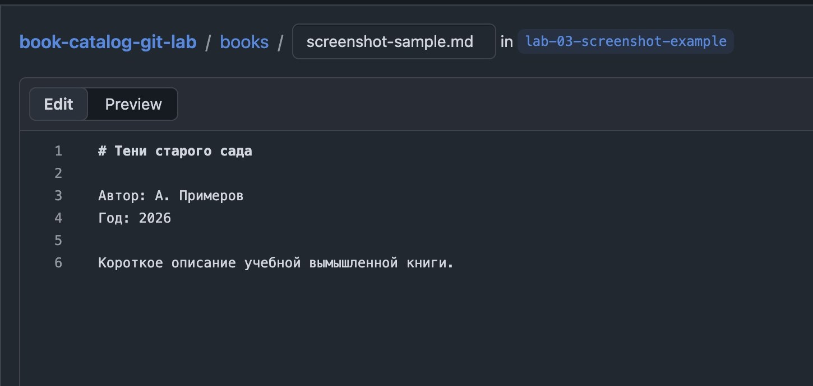
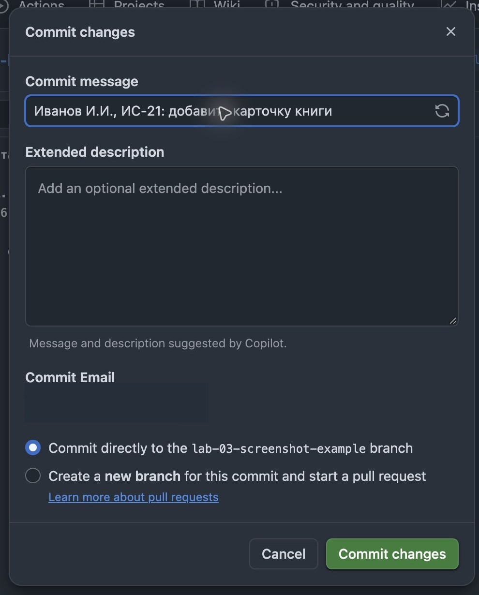
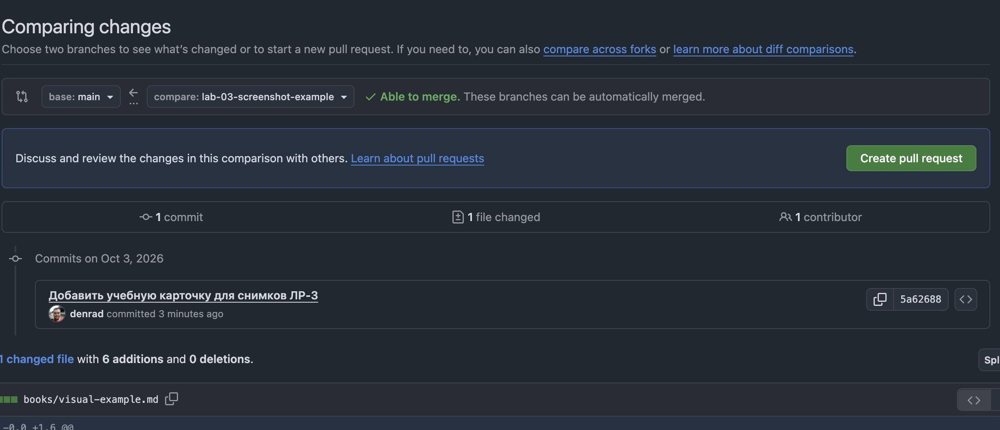
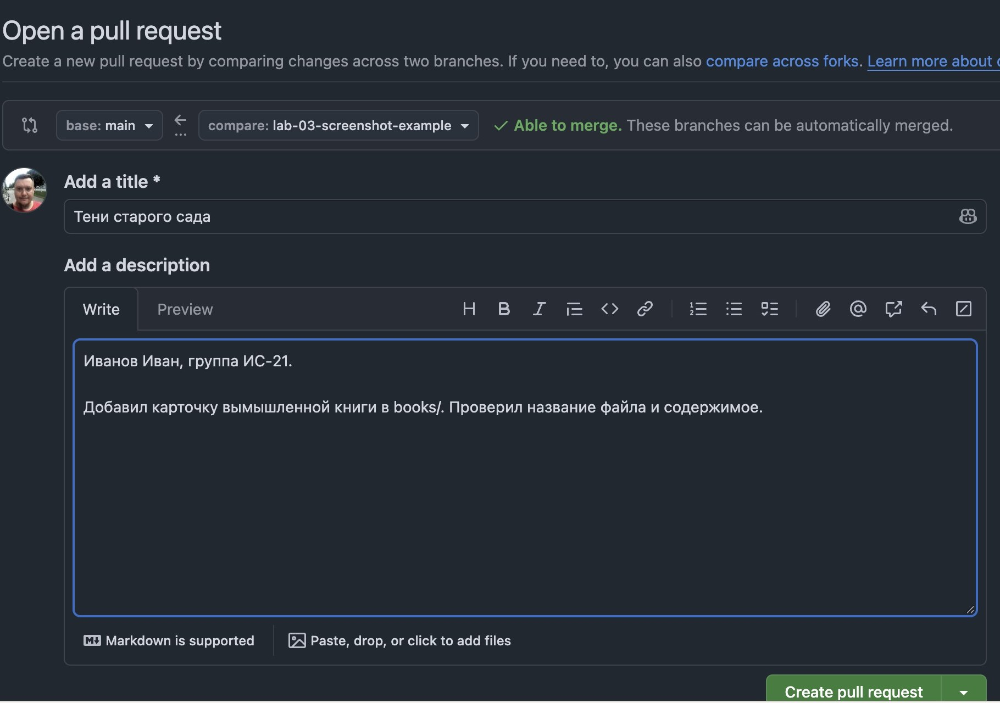

Лабораторная работа № 3
Git и каталог книг
Добавьте карточку книги в общий проект через fork и pull request. Затем исправьте её по замечанию в том же pull request.
Открыть учебный репозиторийЗадача
Предложите изменение команде
Команда ведёт учебный каталог книг на GitHub. Вам нужно добавить отдельный Markdown-файл с карточкой книги, показать изменение на проверку и исправить его по замечанию. Цель — показать, что вы умеете создать fork, предложить изменение через pull request и доработать его после review. Программировать приложение не требуется.
Работа выполняется индивидуально. Ориентир по времени — 90 минут. Если замечание преподавателя придёт позже, завершите исправление после занятия.
Понадобятся учётная запись GitHub и учебный репозиторий.
Перед началом
Посмотрите устройство проекта
Откройте репозиторий на GitHub. Найдите README.md, шаблон карточки, готовый пример, папку books/ и .gitignore. Посмотрите историю одного файла: кто и когда внёс изменение.
Придумайте название вымышленной книги в духе классической литературы. Каждый участник создаёт отдельный файл для своей книги; общий список редактировать не нужно.
Выберите один способ
Вариант А — локальный Git: работа на компьютере с командами. Вариант Б — сайт GitHub: достаточно браузера, устанавливать Git не нужно. Выполните один вариант; карточка, оформление PR и критерии проверки одинаковые.
Вариант А · Локальный Git
Через Git на компьютере
- Получите копию. Зарегистрируйтесь на GitHub, если нужно. Сделайте fork учебного репозитория, склонируйте свой fork на компьютер и создайте отдельную ветку, например
add-my-book. - Добавьте карточку. Создайте в
books/Markdown-файл по образцу. В качестве имени файла используйте свой логин GitHub, напримерbooks/your-github-login.md. Укажите придуманное название книги, автора или авторов, год и короткое описание. Автора, год и описание тоже придумайте: это учебная карточка вымышленной книги. - Проверьте изменение. Посмотрите
git status. Добавьте только нужный файл в индекс и посмотритеgit diff --cached. Убедитесь, что в коммит попадёт именно ваша карточка, затем сделайте коммит с понятным сообщением. Можно добавить фамилию, имя и группу:Добавить книгу «Тени старого сада» — Иванов Иван, ИС-21. - Предложите изменение. Отправьте ветку в свой fork и откройте pull request из этой ветки в основной репозиторий. Название PR — название книги, например «Тени старого сада». В описании обязательно укажите фамилию, имя и учебную группу, затем напишите, что добавили и что проверили. Один студент — один PR.
- Исправьте замечание. Прочитайте комментарий преподавателя, измените карточку в той же ветке, сделайте второй коммит и отправьте ветку снова. Исправление появится в уже открытом pull request. Ответьте на замечание: что исправили и в каком коммите.
- Проверьте принятие. После одобрения преподаватель добавит изменение в основной репозиторий. Найдите свою карточку в его ветке
main.
Fork — ваша копия проекта на GitHub; clone — копия на компьютере. Pull request позволяет показать разницу и обсудить её до включения в основной проект.
Проверка преподавателя
Доработайте тот же pull request
Преподаватель проверяет изменения во вкладке Files changed и оставляет review:
- Comment — вопрос или пояснение. Ответьте в обсуждении.
- Request changes — требуется доработка. PR остаётся открытым: исправьте файл в той же ветке, создайте новый коммит. В варианте А выполните push; в варианте Б сохраните изменение через Commit changes в ту же ветку.
- Approve — работа одобрена. Затем преподаватель отдельно выполняет Merge pull request, чтобы добавить карточку в основной репозиторий.
Если PR имеет статус Closed без Merged, изменение закрыто без добавления. Прочитайте причину и уточните дальнейшие действия у преподавателя.
Подсказка
Команды для варианта А
Замените адрес, название ветки и имя файла на свои. Не копируйте угловые скобки из примера буквально.
git clone <адрес-вашего-fork>
git switch -c add-my-book
git status
git add books/<имя-файла>.md
git diff --cached
git commit -m "Добавить карточку вымышленной книги"
git push -u origin add-my-bookПосле исправления замечания:
git diff
git add books/<имя-файла>.md
git commit -m "Исправить карточку вымышленной книги"
git pushЕсли Git просит указать имя и электронную почту автора коммита, настройте их по инструкции преподавателя. Перед первым коммитом проверьте, какой адрес будет виден в истории публичного репозитория.
Вариант Б · Без терминала
Через сайт GitHub
Установка Git и терминал не нужны. Выполните этот вариант вместо локальных команд варианта А. Карточка книги и требования к PR одинаковые для обоих способов.
- Создайте fork. Войдите в GitHub, откройте учебный репозиторий, нажмите Fork → Create fork. Дальше работайте в копии под своим логином.
- Создайте ветку. В своём fork откройте переключатель
main, введитеadd-my-bookи выберите создание новой ветки. Убедитесь, что выбрана она. - Создайте карточку. Скопируйте содержимое
BOOK_TEMPLATE.md. В своей ветке откройтеbooks/, затем Add file → Create new file. Имя файла —ваш-логин.md; вставьте шаблон и заполните поля вымышленной книги. - Сохраните коммит. Просмотрите карточку через Preview, нажмите
Commit changes…, напишите понятное сообщение и сохраните изменение
в текущую ветку
add-my-book. Фамилию, имя и группу можно добавить в сообщение.

books/ укажите имя файла и заполните карточку. На снимке учебная ветка преподавателя; у вас должна быть ветка add-my-book в собственном fork. Нажмите на изображение, чтобы увеличить.
- Откройте PR. В своём fork с выбранной веткой нажмите Contribute → Open pull request. Если этой кнопки нет, откройте Pull requests → New pull request → compare across forks в исходном репозитории.
- Проверьте направление. Слева, в base repository, должен быть
denrad/book-catalog-git-lab, ветка base: main. Справа, в head repository / head fork, — ваш fork, compare: add-my-book. Просмотрите разницу: должна добавляться только ваша карточка. - Заполните PR. Нажмите Create pull request. Заголовок — название книги; описание — фамилия, имя, группа, что добавлено и что проверено. Отправьте PR кнопкой Create pull request. Не оставляйте его черновиком.


- Исправьте замечание. После review откройте свой fork, выберите
ту же ветку add-my-book, откройте карточку и нажмите карандаш
(Edit this file). Исправьте текст, нажмите Commit changes…
и сохраните новый коммит в текущую ветку. Новый PR и новая ветка не нужны;
отдельный
pushпри работе на сайте не требуется. - Проверьте обновление и результат. Вернитесь в прежний PR: проверьте новый
коммит и изменения в Files changed, ответьте на замечание преподавателя.
После одобрения и merge найдите карточку в
mainисходного репозитория.
Результат
Ссылка на ваш pull request
Открытый pull request в учебном репозитории — ваша сдача работы. Отдельное письмо со ссылкой на профиль GitHub не требуется. В PR должны быть видны:
- Карточка книги в отдельном Markdown-файле.
- Первый коммит с добавлением карточки.
- Замечание преподавателя и второй коммит с исправлением в том же pull request.
- Фамилия, имя и группа в описании; название книги в заголовке PR.
- Одобрение преподавателя и статус Merged после принятия.
- Отсутствие случайных файлов в изменениях.
Не закрывайте и не создавайте новый pull request ради исправления. Если замечание непонятно, уточните его в обсуждении. Скриншот или отдельный документ не заменяют ссылку: результат работы — сам репозиторий и история изменения.
Самопроверка
Что важно проверить
- Pull request направлен из вашей ветки и fork в исходный репозиторий.
- Карточка находится в нужной папке и оформлена по образцу.
- Сообщения коммитов объясняют добавление и исправление.
- В изменении нет случайных файлов, настоящих паролей, токенов и посторонних личных данных.
Будьте готовы объяснить: чем fork отличается от clone и ветки; где находится ваш коммит до merge; почему новый коммит обновляет тот же PR; чем Approve отличается от Merge.
.gitignore помогает не добавлять локальные файлы, но не удаляет из истории то, что уже попало в коммит.